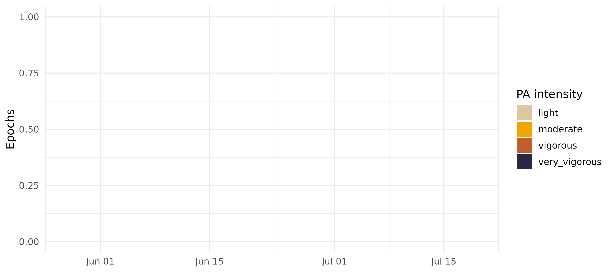

Physical activity intensity from ActTrust/GT3X+ counts
Source:vignettes/physical-activity.Rmd
physical-activity.RmdzeitR’s pipeline so far has been about one half of the 24 h
rest-activity cycle: sleep. pa_equations(),
estimate_ee(), classify_pa_intensity(), and
classify_pa_counts() add the other half – estimating energy
expenditure (METs) and classifying physical activity (PA) intensity from
the same raw activity counts, using equations published in Batista et
al. (2026, PLoS ONE, doi.org/10.1371/journal.pone.0348631).
Read ?pa_equations before using this in a real
analysis. These equations come from a single
controlled-treadmill validation study, and the help page spells out
exactly what that does and doesn’t license (population, device,
modelling caveats). This vignette shows the mechanics; it isn’t a
substitute for that discussion.
The equation
The source study fits
sqrt(MET) ~ sqrt(activity_counts) * device_placement via a
linear model on indirect-calorimetry data, then reports the fitted
coefficients (their Table 2). zeitR doesn’t re-fit that model – it
can’t, without breath-by-breath VO2 data – it applies the
published coefficients directly:
pa_equations() returns this table for all four device x
placement combinations the source study validated:
pa_equations()
#> # A tibble: 4 × 7
#> device placement b0 b1 cut3 cut6 cut9
#> <chr> <chr> <dbl> <dbl> <dbl> <dbl> <dbl>
#> 1 GT3X+ hip 1.06 0.0199 1132 4853 9468
#> 2 ACTT hip 1.11 0.0088 5057 23339 46410
#> 3 ACTT wrist 1.23 0.0081 3761 22368 47203
#> 4 GT3X+ wrist 1.21 0.0127 1698 9503 19787ACTT is Condor Instruments’ ActTrust device (PIM mode);
GT3X+ is ActiGraph’s GT3X+ (vector magnitude).
cut3/cut6/cut9 are the published
count/min cut-points at the 3, 6, and 9 MET thresholds – provided for
reference; the functions below classify on estimated METs directly
rather than re-deriving these.
Estimating METs from counts
estimate_ee() applies the equation for a given device
and placement:
counts <- c(0, 1000, 5000, 25000, 50000)
estimate_ee(counts, device = "ACTT", placement = "hip")
#> [1] 1.225449 1.919002 2.990319 6.242013 9.454025Placement matters – the same count value implies different METs at the hip than at the wrist, since wrist movement is a noisier proxy for whole-body energy expenditure:
data.frame(
counts = counts,
hip = estimate_ee(counts, device = "ACTT", placement = "hip"),
wrist = estimate_ee(counts, device = "ACTT", placement = "wrist")
)
#> counts hip wrist
#> 1 0 1.225449 1.520289
#> 2 1000 1.919002 2.217551
#> 3 5000 2.990319 3.260757
#> 4 25000 6.242013 6.318801
#> 5 50000 9.454025 9.267245Classifying PA intensity
classify_pa_intensity() bins any MET value into the four
WHO-style intensity bands (light, moderate, vigorous, very vigorous)
used throughout the source study:
mets <- estimate_ee(counts, device = "ACTT", placement = "hip")
classify_pa_intensity(mets)
#> [1] light light light vigorous very_vigorous
#> Levels: light < moderate < vigorous < very_vigorousclassify_pa_counts() combines the two steps – counts
straight to an intensity factor – for the common case where you don’t
need the intermediate MET values:
classify_pa_counts(counts, device = "ACTT", placement = "hip")
#> [1] light light light vigorous very_vigorous
#> Levels: light < moderate < vigorous < very_vigorousApplying it to a real recording
The bundled ActTrust recording used elsewhere in zeitR’s vignettes
was collected in PIM/TAT/ZCM mode (see its header), so its
activity column is already PIM counts/min – the exact input
estimate_ee()/ classify_pa_counts() expect for
device = "ACTT". ActTrust is normally worn on the wrist for
sleep monitoring, so placement = "wrist" is the appropriate
choice here.
FILE <- system.file("extdata", "input1.txt", package = "zeitR")
TZ <- "America/Sao_Paulo"
result <- run_pipeline_native(FILE, tz = TZ, quiet = TRUE)
#> ℹ Reading input1.txt ...
#> ✔ [input1] Done. 52 main night(s), 0 secondary episode(s).
result$data$pa_intensity <- classify_pa_counts(
result$data$activity,
device = "ACTT",
placement = "wrist"
)
table(result$data$pa_intensity)
#>
#> light moderate vigorous very_vigorous
#> 63111 11985 794 306Remember what this recording actually represents before over-reading
that table: the source equations were fit on a controlled treadmill
protocol (walking/running, 3-9 km/h), not free-living daily activity.
Applying them to a full multi-day free-living recording – as done here –
is exactly the kind of extrapolation flagged in
?pa_equations. Treat the resulting intensity labels as
illustrative of the mechanics, not as a validated free-living PA
measure.
A quick visual of intensity across the whole recording:
daily <- result$data
daily$date <- as.Date(daily$datetime)
daily <- aggregate(list(n = daily$activity), by = list(
date = daily$date, pa_intensity = daily$pa_intensity
), FUN = length)
ggplot(daily, aes(x = date, y = n, fill = pa_intensity)) +
geom_col(width = 1) +
scale_fill_manual(
values = c(light = "#D9C8A0", moderate = "#F0A500",
vigorous = "#C25E2A", very_vigorous = "#2D2640"),
drop = FALSE
) +
labs(x = NULL, y = "Epochs/day", fill = "PA intensity") +
theme_minimal(base_size = 12)
Choosing an equation set
equation_set is exposed as an explicit argument on all
four functions (default, and currently only, "batista2026")
so that a future validation study – covering a different population,
device, or free-living protocol – can be added later as an alternative
set without changing this API:
# Not yet available -- illustrative only
estimate_ee(counts, device = "ACTT", placement = "wrist",
equation_set = "some_future_study")Next steps
-
?pa_equations– the full generalisability discussion: sample characteristics, cross-study cut-point variability, and why the GT3X+ equations here are diagnosable against Sasaki et al. (2011)’s transparent two-regression model but not against Santos-Lozano et al. (2013)’s ANN -
vignette("sleep-analysis")– the sleep half of the 24 h cycle -
?compute_sleep_metrics,?compute_cpd_metrics– combine with PA intensity for a fuller rest-activity picture